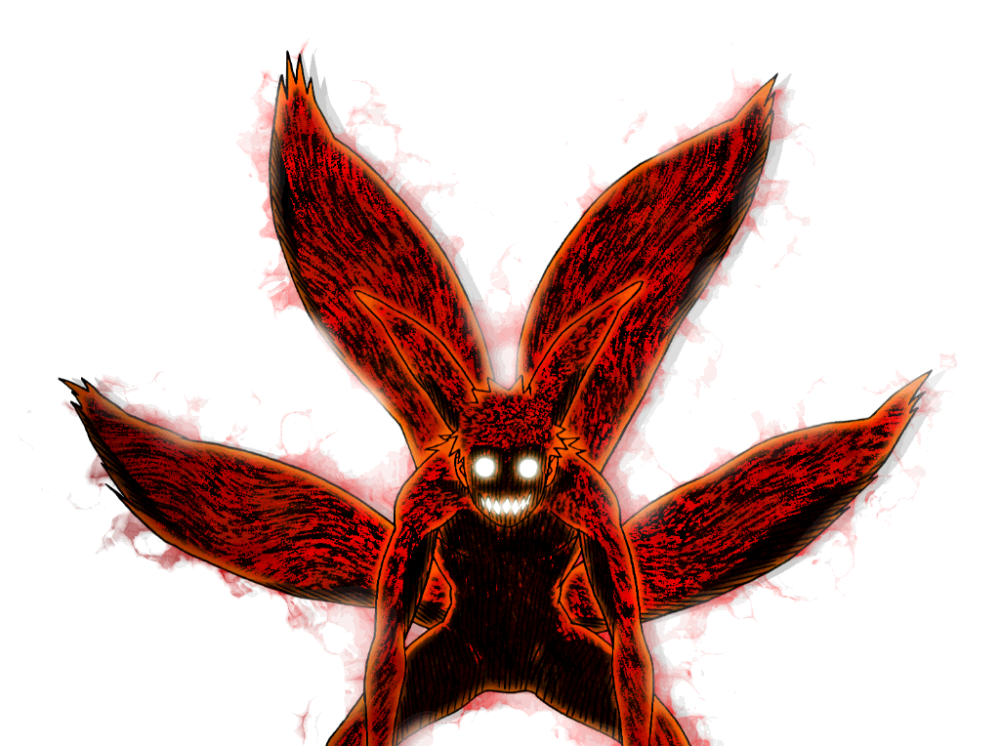
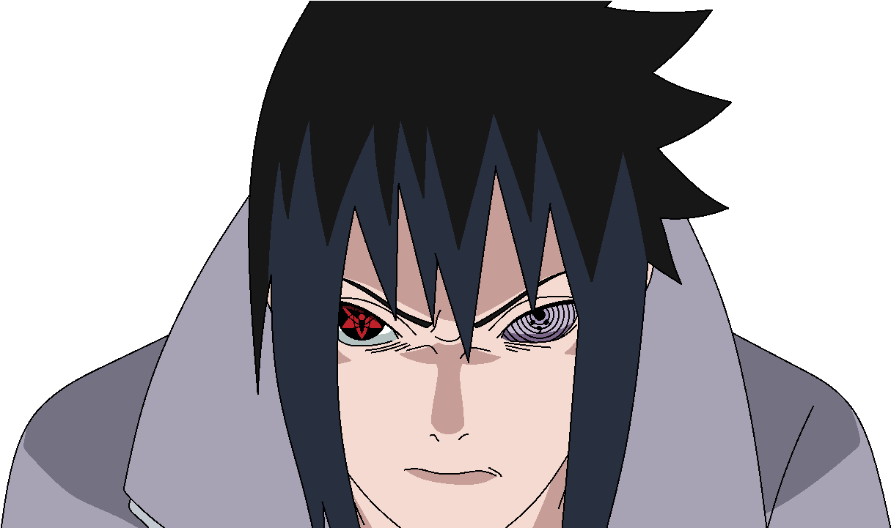
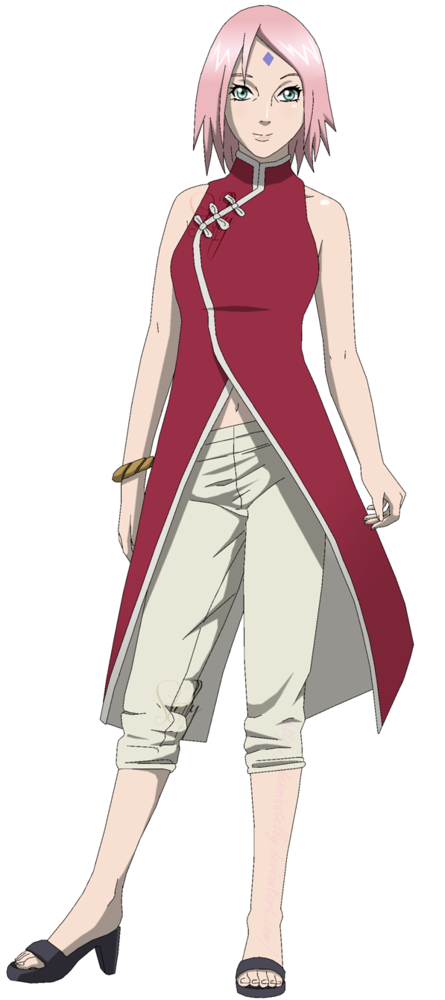

Sinopse
"Naruto Shippuden" é a continuação da história de Naruto Uzumaki, um jovem ninja da Vila Oculta da Folha, que busca se tornar Hokage, o líder de sua vila. Após um período de treinamento, Naruto retorna para enfrentar novos desafios e inimigos, incluindo a organização criminosa Akatsuki, que busca capturar as bestas com cauda, incluindo a Raposa de Nove Caudas que reside dentro dele. Ao longo da série, Naruto e seus amigos, como Sasuke Uchiha e Sakura Haruno, enfrentam batalhas emocionantes, exploram suas próprias histórias e crescem como ninjas e como pessoas. A trama aborda temas de amizade, sacrifício, redenção e a luta contra o preconceito, enquanto Naruto busca reconhecimento e aceitação em um mundo repleto de conflitos e desafios.
INFORMAÇÕES
Avaliações gerais do anime:
- Nota: 7.921/10.000
- Popularidade: 871.135
Total de Episódios e temporadas:
- 22 Temporadas
- 500 episódios
PERSONAGENS (PRINCIPAIS)
Naruto Uzumaki
Naruto Uzumaki
Naruto Uzumaki é o protagonista do anime "Naruto", um jovem ninja da Vila Oculta da Folha que sonha em se tornar Hokage. Portador da Raposa de Nove Caudas, ele enfrenta preconceito e solidão, mas é otimista, leal e valoriza a amizade. Ao longo da série, Naruto evolui de um garoto impulsivo para um dos ninjas mais poderosos e respeitados, conquistando reconhecimento e aceitação.
Sasuke Uchiha
Sasuke Uchiha
Sasuke Uchiha é um dos principais personagens do anime "Naruto". Membro do clã Uchiha, ele é um jovem ninja habilidoso que busca vingança contra seu irmão, Itachi, que massacrou seu clã. Ao longo da série, Sasuke enfrenta suas emoções e rivalidades, evoluindo de um personagem frio e distante para alguém em busca de redenção e propósito.

Sakura Haruno
Sakura Haruno
Sakura Haruno é uma personagem do anime e mangá "Naruto". Ela é uma ninja da Vila Oculta da Folha, conhecida por suas habilidades médicas e força física. Inicialmente insegura e obcecada por Sasuke Uchiha.